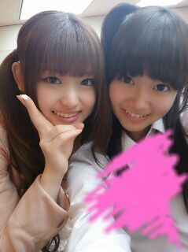
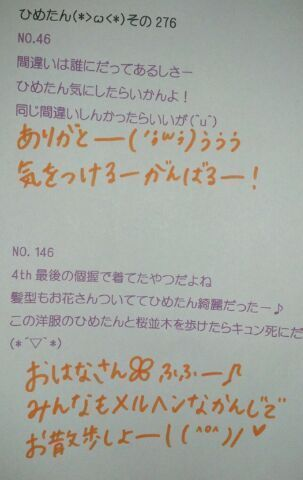

| 2013/06 25 Tue | ひめたん(*>ω<*)そ の309 |

質問ありがとうー＊
またちょっとずつ答えていくので
楽しみにしててくだっさーい∩^ω^∩
美容院いった！髪切った！どん！
５センチどや！
大胆にはきりませんよーそんなー
怖いじゃーん♪
愛未にすすめられて
あたしも黒酢飲んでるよたまにー
すっぱい(´・ω・｀)
だってお酢だもんね
結構がちですっぱくてびびった。
でもね体に良さそうな味だから
頑張って飲んでるよー
最近は物忘れが多くて困ってるー
「あれ？携帯は？さっきまで持ってたのにー」
ってよく言ってる。
結局ぽっけに入ってたりするんだけどねー
でもほんとにぽっけに入れた記憶なくて
めちゃーあせる。今日だけで３回あったぞ。
あー思い出したB.L.TコラボTシャツ！
"happy"をテーマに
みんなでTシャツのデザインをしました♪
詳しくはB.L.T.さんのホームページを
チェックしてみてくださいね( ^ω^ )ノ
みんなーお揃い着よー♪
★私たちのニューシングル
「ガールズルール」のフル尺が、
レコチョクにて
6/26(水)から先行配信スタートします！！
レコチョクでは３２名様限定で
お気に入りメンバーの
メッセージ入りポスターをプレゼント!!
改めて歌詞をゆっくり読んでみて
乃木坂らしさとゆーか、
おにゃーのこみんなが共感できるような
そんな歌だなーって(゜ω゜)
あ、もちろん
おとこのこも聴いてね♪
一緒に夏を感じましょーう！
詳しくは公式HPでみてね！
DLはこちら！
http://recochoku.com/info/nogizaka46_girls/
質問ありがとうー＊
またちょっとずつ答えていくので
楽しみにしててくだっさーい∩^ω^∩
美容院いった！髪切った！どん！
５センチどや！
大胆にはきりませんよーそんなー
怖いじゃーん♪
愛未にすすめられて
あたしも黒酢飲んでるよたまにー
すっぱい(´・ω・｀)
だってお酢だもんね
結構がちですっぱくてびびった。
でもね体に良さそうな味だから
頑張って飲んでるよー
最近は物忘れが多くて困ってるー
「あれ？携帯は？さっきまで持ってたのにー」
ってよく言ってる。
結局ぽっけに入ってたりするんだけどねー
でもほんとにぽっけに入れた記憶なくて
めちゃーあせる。今日だけで３回あったぞ。
あー思い出したB.L.TコラボTシャツ！
"happy"をテーマに
みんなでTシャツのデザインをしました♪
詳しくはB.L.T.さんのホームページを
チェックしてみてくださいね( ^ω^ )ノ
みんなーお揃い着よー♪
★私たちのニューシングル
「ガールズルール」のフル尺が、
レコチョクにて
6/26(水)から先行配信スタートします！！
レコチョクでは３２名様限定で
お気に入りメンバーの
メッセージ入りポスターをプレゼント!!
改めて歌詞をゆっくり読んでみて
乃木坂らしさとゆーか、
おにゃーのこみんなが共感できるような
そんな歌だなーって(゜ω゜)
あ、もちろん
おとこのこも聴いてね♪
一緒に夏を感じましょーう！
詳しくは公式HPでみてね！
DLはこちら！
http://recochoku.com/info/nogizaka46_girls/

 ひめたんがすきなヘアアレは
ひめたんがすきなヘアアレは
なんですかっ
時間あるときは編み込みしますっ( ^ω^ )
さらに時間があるときは
プラスで巻いたりツインにしたり。
メイクさんにやってもらうときは、やっぱ
ハーフツインの上だけくるくるが好き♪
ひめたぁぁああんは金髪の男どう思う？
ひめたぁぁああんん！
夏だからね(^O^)
学校のみんなも髪明るくしたいゆーてるよー
ひめたんの髪色は何系ですか？
なんてゆーのかな。
真っ黒じゃないけど、
焦げ茶よりも黒に近いような...
なんてゆーんですかね。
ミルクチョコより暗いよー(〃ω〃)
ひめたんの髪の毛のケア方法教えて☆
最近ね！ついにつっいーにー
ノンシリコンシャンプーにしたの！
もうねー全然違うよーおすすめよー♪
細かいケアは美容院さんにおまかせです。

(＊´・ω・＊)
コメント(169)
2013/06/25 23:54